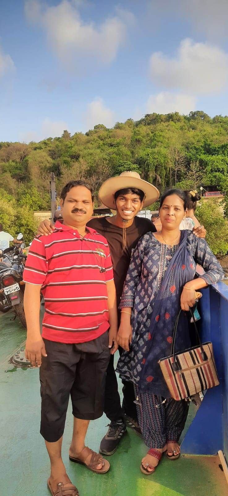
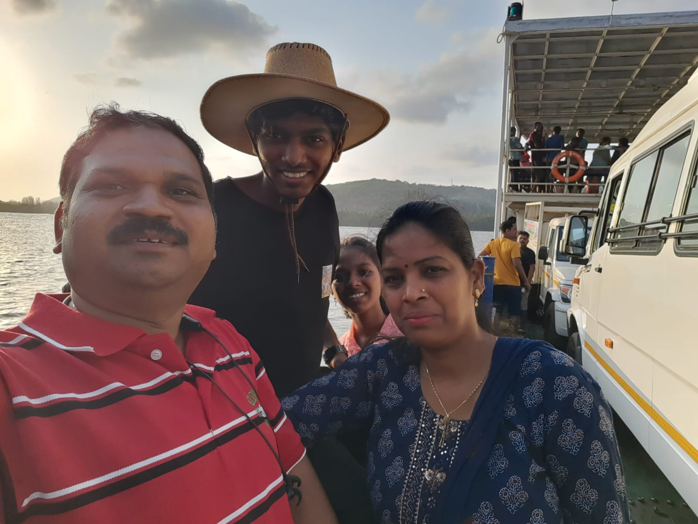
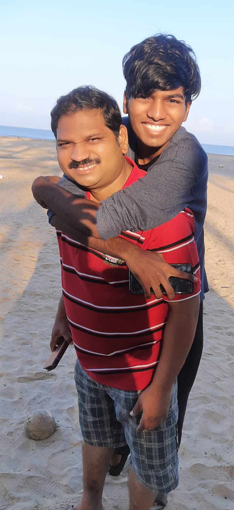
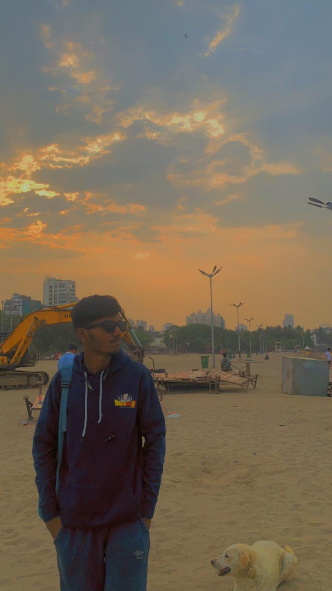

Summer vacations always bring a sense of excitement and anticipation, but there was something particularly special about the trip my family took one summer. It wasn't just about the destination; it was about the journey itself. Our favorite trip together was a memorable ferry ride that encapsulated the essence of adventure, togetherness, and the joy of exploration. As we embarked on our journey, the sun was shining brightly, and the warmth of the summer air enveloped us.
I remember feeling a surge of excitement as we approached the ferry terminal, the anticipation building with each passing moment. We were about to set sail on an adventure that promised new experiences and cherished memories. Boarding the ferry, I couldn't contain my excitement. The sight of the vast expanse of water stretching out before us filled me with a sense of wonder and awe. The ferry bustled with activity as passengers found their seats and prepared for the voyage ahead. Amidst the hustle and bustle, my family and I found a cozy spot on the deck, eager to soak in the panoramic views and the refreshing sea breeze. As the ferry set sail, leaving the shore behind, a wave of exhilaration washed over me. The rhythmic sound of the waves against the hull provided a soothing backdrop to our journey. I glanced around at my family, their faces lit up with smiles, their eyes sparkling with anticipation. In that moment, surrounded by my loved ones, I felt an overwhelming sense of gratitude for the opportunity to share this adventure together. As we sailed across the shimmering waters, we marveled at the scenic beauty that unfolded before us. The coastline receded into the distance, replaced by rolling waves and endless horizons. Seagulls soared overhead, their graceful flight adding to the enchantment of the journey. We eagerly snapped photos to capture the moments, each click preserving a memory to be cherished for years to come. One particular snapshot stands out in my mind: a picture of me wearing a hat, the wind tousling my hair as I leaned against the railing, a wide grin on my face. It perfectly encapsulated the carefree spirit of our adventure, a moment frozen in time that symbolized the joy of exploration and the bond shared between family members. As the ferry made its way to our destination, we relished every moment of the journey. We laughed, we talked, we shared stories, and we bonded in ways that only travel can facilitate. It wasn't just about reaching the other side; it was about the experiences we shared along the way, the laughter echoing across the deck, the sense of wonder that filled our hearts. In the end, it wasn't the destination that made this trip memorable; it was the journey itself—the ferry ride that brought us together, the moments of joy and laughter that we shared, and the memories we created along the way. As we disembarked from the ferry, I knew that this summer adventure would forever hold a special place in our hearts, a cherished chapter in the story of our family's travels.
*Images*
   